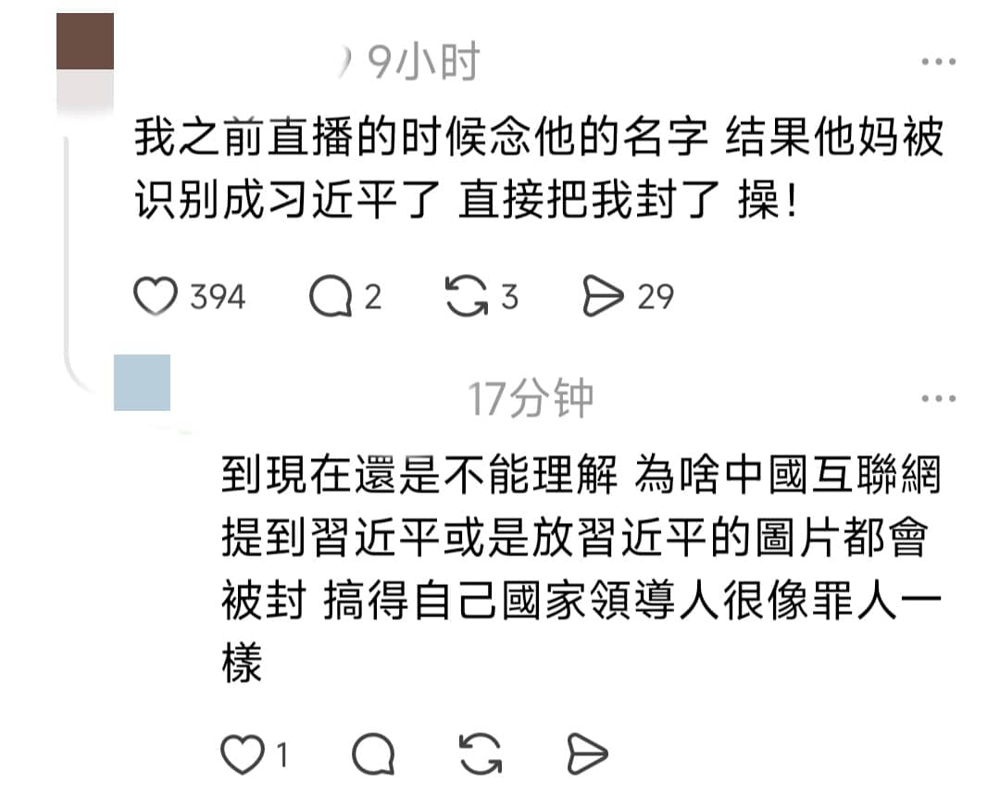

永雏散
@ace_sana_
我操这个笑死我了

王局拍案
@wangjupaian
【韩星徐竟培自我介绍火了：谐音习近平】近日，一段韩国艺人徐竟培用中文自我介绍的视频，在网络引发热议。视频中，徐竟培用中文说道：“大家好，我是徐竟培。”由于听起来很像习近平，相关二创和玩笑迅速在社交平台传播。
但影片火了后，有网友留言称，自己曾在直播中念出徐竟培的名字，结果直播被封。 https://t.co/BhBJuDRWDJ